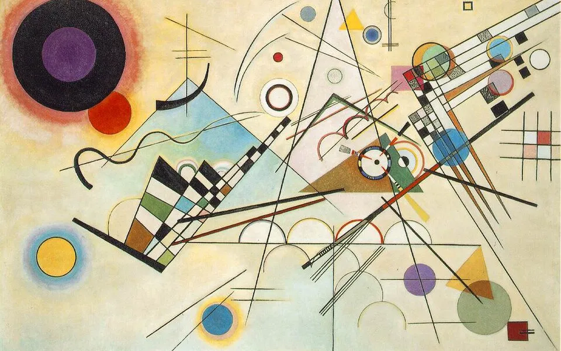
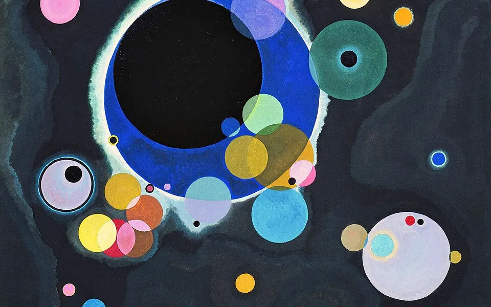
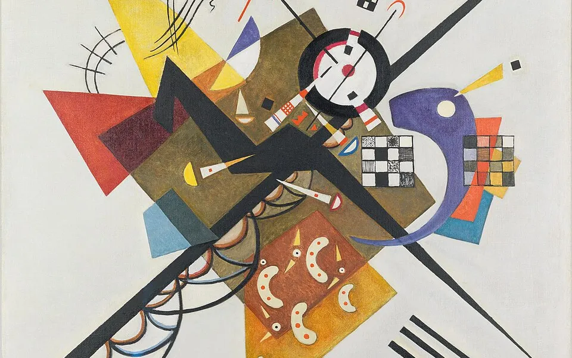
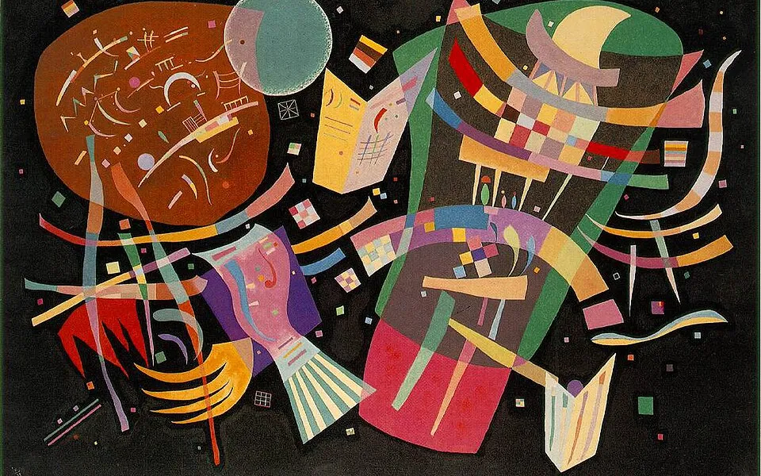
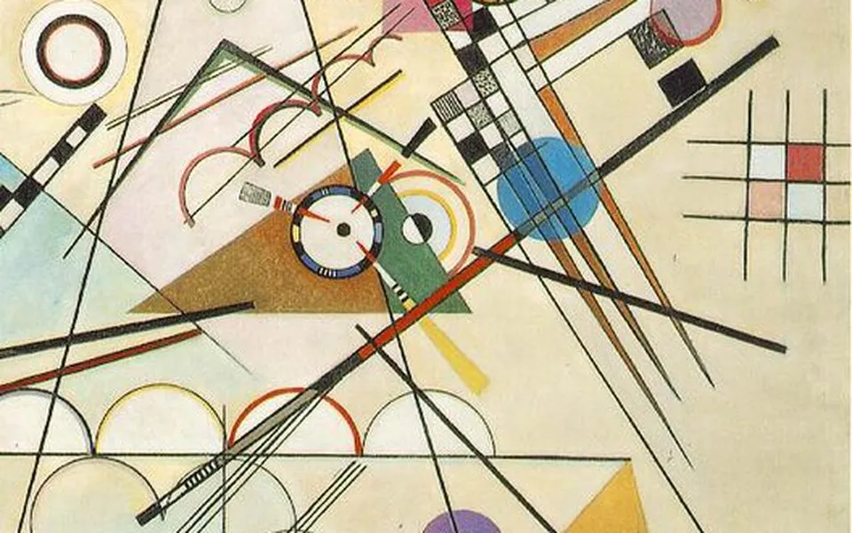

그랜드 홀 — 고흐 갤러리 & 30년의 커리어
현관을 열면 정면 위에 〈별이 빛나는 밤〉이 걸려 있습니다. 집의 상징인 〈아를의 침실〉부터 마지막 해의 〈꽃 피는 아몬드 나무〉까지, 아홉 점을 걸었습니다. 그림 아래 벽에는 1996년 입사부터 베이징 주재, 해외사업그룹장을 거쳐 지금까지, 삼성SDS에서 보낸 30년을 칸딘스키의 그림과 함께 일곱 장면으로 걸어 두었습니다.
걸린 그림 9점
그림을 누르면 크게 봅니다. 모두 위키미디어 공용의 퍼블릭 도메인 이미지입니다.
삼성SDS에서 보낸 30년
1996년 해외시스템개발 대리로 입사해 전략기획, 중국 지역전문가, 베이징 법인 총경리, 해외사업그룹장을 거쳐 지금은 물류 글로벌 사업을 맡고 있습니다. IT 서비스와 해외 사업개발, 그리고 12년의 중국 사업이 그 중심에 있습니다.
첫 출장
해외시스템개발 대리
해외시스템개발 부문에서 첫 해외 출장과 함께 커리어를 시작. 글로벌 고객사 시스템 구축 프로젝트의 개발·현장 대응을 맡으며 IT 서비스의 기본기를 다졌습니다.

전략기획
전략기획팀 과장
전략기획팀에서 중장기 사업 전략, 경영 계획, 신규 사업 검토를 담당. 회사 전체의 사업 포트폴리오를 숫자와 논리로 보는 눈을 길렀습니다.

중국지역전문가
삼성그룹 파견(베이징)
삼성그룹 지역전문가로 선발되어 베이징에서 1년간 언어·문화·시장을 현장에서 익혔습니다. 이후 12년 중국 사업의 토대가 된 시간입니다.

해외사업·컨설팅
차장
해외사업과 컨설팅 조직에서 해외 고객 제안, 사업 수주, IT 컨설팅을 수행하며 사업개발 역량을 넓혔습니다.

베이징 주재
중국법인 사업개발팀 총경리
중국법인 사업개발팀 총경리로 6년간 베이징에 주재. 현지 정부·기업 파트너십, 신규 고객 발굴, 법인 사업 확대를 이끌었습니다.
홈IoT 해외사업
해외사업그룹장
해외사업그룹장으로 홈IoT 솔루션의 글로벌 사업을 총괄. 해외 파트너 발굴부터 상품 현지화, 판매 채널 구축까지 책임졌습니다.

물류 글로벌
중국 Regional Manager
물류 플랫폼의 글로벌 사업에서 중국 Regional Manager를 맡아 중국 시장의 고객·파트너 비즈니스를 이끌고 있습니다.
"나는 내 그림을 꿈꾸고, 그리고 내 꿈을 그린다."빈센트 반 고흐